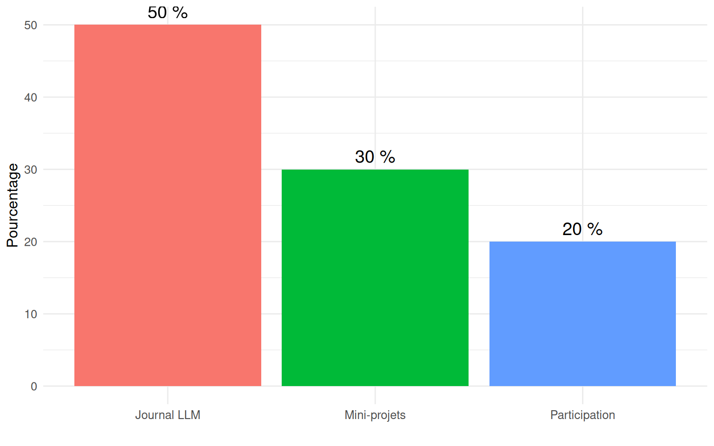

# Créer une liste de notes
notes <- c(15, 12, 18, 14, 16, 13, 17)
# Calculer la moyenne
moyenne <- mean(notes)
# Afficher le résultat
print(paste("La moyenne est :", moyenne))[1] "La moyenne est : 15"Méthodologie de Projet Personnel et Professionnel
11 septembre 2025
Apprendre la Programmation R avec les LLM
🤖 LLM = Votre Assistant
LLM : Large Language Model, aussi connu sous le nom d’IA générative
Ex : ChatGPT, Claude, Mistral, etc.
📊 R = Langage Statistique
Pour analyser, visualiser, calculer
🎯 Objectif = Collaboration
Programmer AVEC l’IA générative intelligemment
Levez la main si vous avez déjà…
Pas de jugement ! 😊
Objectif : Autonomie et esprit critique
"Fais-moi des statistiques sur mes données""J'ai 10 notes d'étudiants :
12, 15, 18, 14, 16, 13, 17, 11, 19, 15.
Calcule la moyenne, médiane, écart-type
en R avec des commentaires explicatifs."Résultat : Code précis et commenté !
# Créer une liste de notes
notes <- c(15, 12, 18, 14, 16, 13, 17)
# Calculer la moyenne
moyenne <- mean(notes)
# Afficher le résultat
print(paste("La moyenne est :", moyenne))[1] "La moyenne est : 15"C’est tout ! Pas si compliqué, non ? 😊
Votre demande (à votre LLM préféré)
"J'ai des données de vente par mois :
Janvier : 1500€, Février : 2000€, Mars : 1800€
Crée un graphique en barres avec R"Essayez !
Principe pédagogique : Les erreurs sont des occasions d’apprentissage, pas des échecs !
Objectif : Maîtriser le dialogue avec un LLM et les concepts R de base
Objectif : Analyser de vraies données en autonomie
30-60 min
90-120 min
30 min
L’objectif : évaluer votre progression, pas vous piéger !
Cours à validation.
Quelles sont vos questions ? 🤔
Pas de question bête ! Nous sommes tous là pour apprendre ensemble 😊
N’oubliez pas : l’erreur est votre amie ! 😊
📚 Apprenez
🔍 Explorez
🎉 Réussissez

Comment ça marche avec un LLM ? 🤝